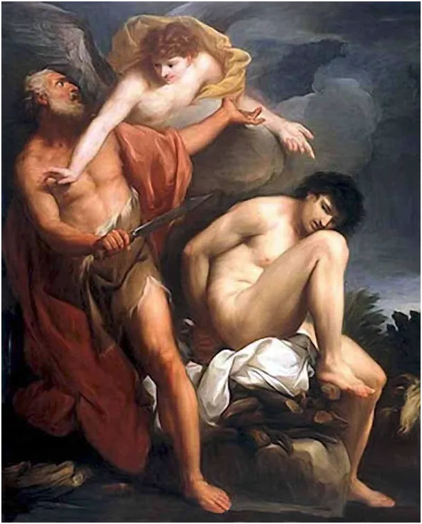
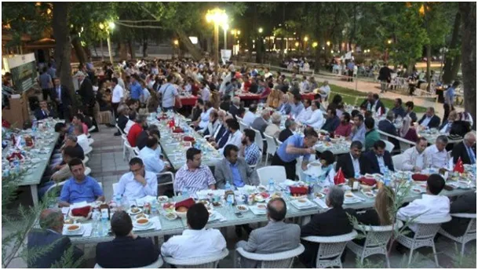

Kutlu Olsun - Błogosławię Ci
Mało jest ludzi na świecie, którzy nie słyszeli o Abrahamie. Chrześcijanie, Żydzi , Arabowie wszyscy mają go w swoim kanonie. Jest ojcem Narodu Wybranego jego drugi syn Izmael jest protoplastą Arabów i pierwszym prorokiem Koranu.

Abraham jest ojcem wiary, jaką znamy. Żył ok. 4 000 lat temu w świecie, gdzie wielobóstwo i składanie ofiar z ludzi były normą. Toteż, gdy usłyszał od Boga wezwanie, aby swego jedynego syna jakiego miał z własną żoną, złożyć na ołtarzu jako ofiarę, nie zawahał się. Głos anioła w ostatniej chwili powstrzymał go przed zadaniem śmiertelnego ciosu. Chwilę potem, tuż obok, Abraham spostrzegł barana uwięzionego w gęstych zaroślach. Kręcone rogi tych zwierząt bywają przyczyną takich kłopotów.
Dla nas to historia ze Starego Testamentu, jakich wiele. W Islamie to kluczowe święto, Święto Ofiary, po turecku Kurban Bayramı. Jest to dzień, w którym ludzie dzielą się jedzeniem z biednymi. Bogaci ludzie kupują nawet potężne byki i ofiarują je na wspólny stół świątecznej kolacji. Jak widzicie świąteczne kartki z barankiem przypominają nasze wielkanocne i nie bez powodu. Ocalenie Izmaela, jest potężnym krokiem w postępie ludzkości, oznacza zakończenie epoki ludzkich ofiar sakralnych. Oczywiście nie stało się to wszędzie i od razu, wiemy co się działo w prekolumbijskiej Ameryce Południowej, piramidy ściekały ludzką krwią zaledwie 500 lat temu. Piszę o tym, bo właśnie trwa to święto a byłem w Turcji zapraszany na uroczystą kolację pod gołym niebem. Gdy Muzułmanie rozkładali dłonie do modlitwy, ja składałem je razem "po naszemu" i widziałem szczery uśmiech w ich oczach.

Jest wiele paradoksalnych postaw w człowieku, jedną z ich jest religijna wrogość. Nigdy jej nie spotkałem w Turcji, ale wiem, że potrafi być na Bliskim Wschodzie śmiertelna.
Życzę dziś wszystkim moim tureckim znajomym Kutlu Olsun, czyli "błogosławię Cię". W dzień powszedni lubię się witać z nimi tradycyjnym arabskim "salam alejkum". Arabski w Turcji to tylko język modlitwy, jak niegdyś łacina w Europie. Mówiąc "salam alejkum" mówię nie mniej ni więcej pokój z Tobą, dokładnie pierwsze słowa Zmartwychwstałego Chrystusa. Taki ten świat mały!
Paweł Klimczewski